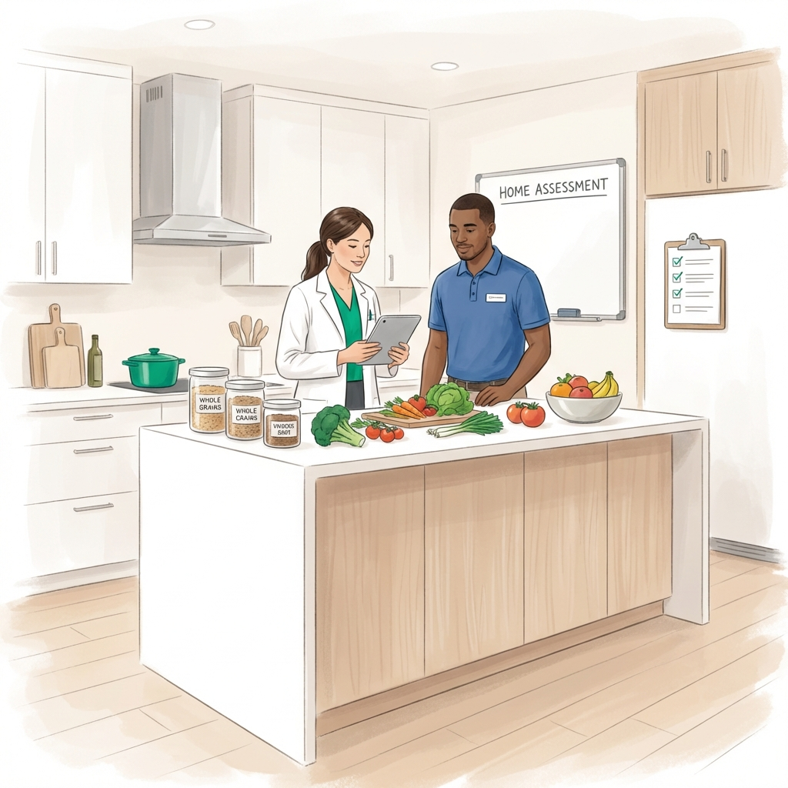
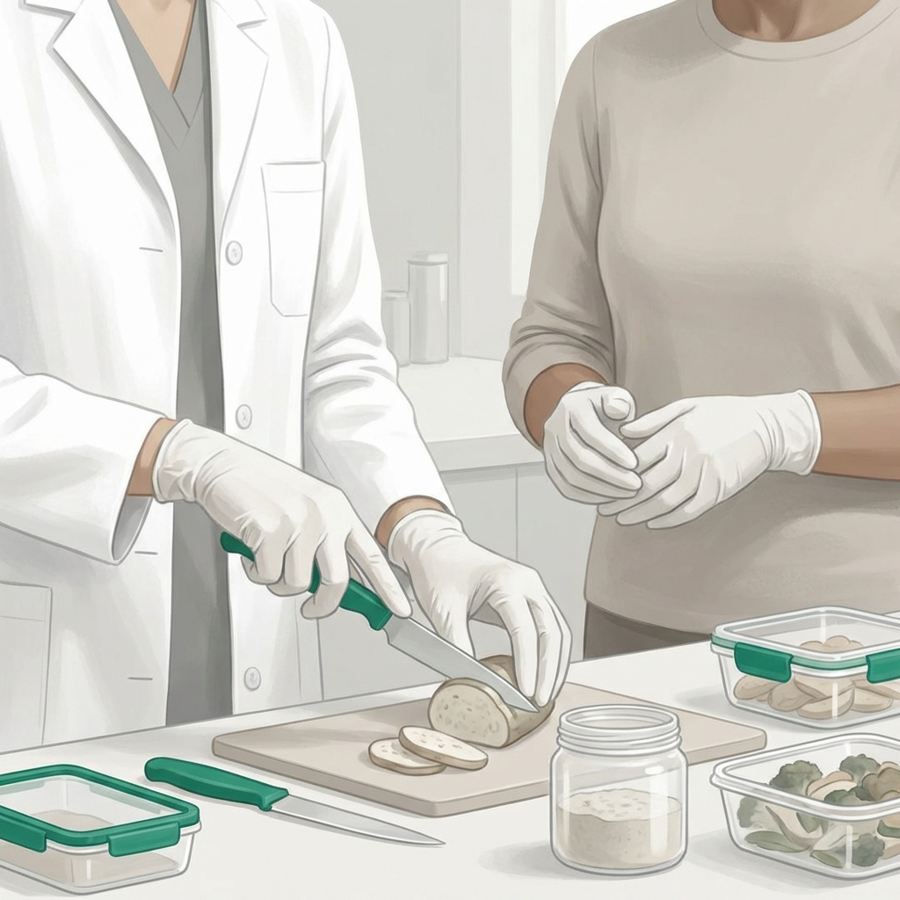

Nutrición Clínica Especializada en la Comodidad de tu Hogar
Llevamos el rigor de la consulta clínica a tu domicilio, facilitando el acceso a salud de alta calidad para pacientes con movilidad limitada o necesidades especiales.
La salud no debería verse interrumpida por dificultades de traslado. Entendemos que para muchos adultos mayores o pacientes en recuperación, el entorno del hogar es el lugar más seguro y cómodo para recibir atención profesional.
En Clínica Denki, nuestras visitas domiciliarias van más allá de una simple charla: evaluamos el entorno real, capacitamos a cuidadores en su propia cocina y aseguramos que el plan nutricional sea ejecutable y sostenible en tu día a día.
Beneficios de la Atención Domiciliaria
Seguridad, cercanía y resultados tangibles.

Evaluación del Entorno
Analizamos las facilidades y retos reales de tu cocina y despensa para un plan accionable.
Nutrición In Situ
Llevamos la tecnología y el rigor clínico directamente al espacio donde el paciente vive y come.
Compromiso con la Accesibilidad
Nuestra misión es que la nutrición de alta especialidad llegue a quien más la necesita.

Capacitación Real: Enseñamos a los cuidadores tácticas de preparación y seguridad alimentaria en su propia cocina.
Preguntas Comunes
¿Qué zonas de la CDMX cubren?
Tenemos cobertura principal en Benito Juárez, Cuauhtémoc y Miguel Hidalgo. Contáctanos para consultar otras zonas.
¿Llevan equipo de medición?
Sí, contamos con equipo portátil de alta precisión para evaluar composición corporal y otros parámetros clínicos.
¿Cuál es la diferencia con la consulta online?
La visita presencial permite una evaluación física directa y una capacitación práctica mucho más profunda con los cuidadores.
Recibe Atención Profesional en Casa
Coordina hoy una visita domiciliaria y transforma tu hogar en un espacio de salud y bienestar.